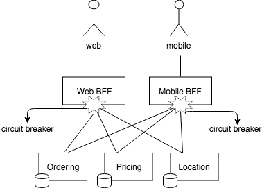
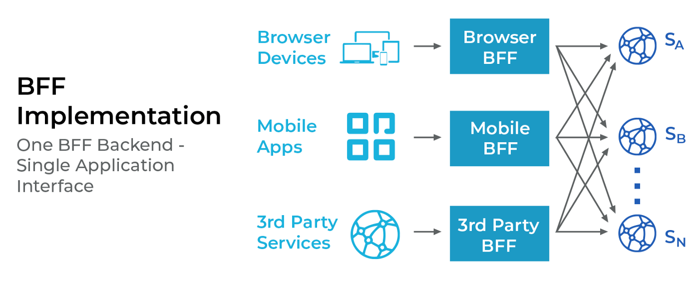
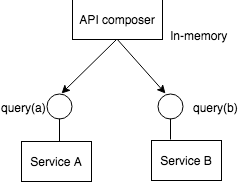
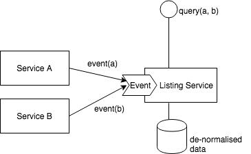

BFF(Backend For Frontend)层基本上是一个编排器层(orchestrator layer)，也称为前端的后端。当编排器层包括聚合、计算、某些数据的组合时，它就不仅仅是一个简单的 API 网关。由于大多数公司出于一些原因（可扩展性、开发成本、可维护性等）而转向微服务架构。因此，考虑到每个客户端都有不同的规范和不同的数据要求，每个微服务都很难为其每个客户端提供准确的 API。
BFF是什么
BFF会根据不同的客户端需求，提供不同的接口。

- 每个客户端有不同的需要，因此微服务很难在一个API里只返回需要的数据。例如，web端需要更多的数据（意味着更高的负载），而mobile端则不需要。如果mobile端使用web端的接口，由于加载了不需要的数据，增加了mobile端的响应时间。
- 微服务的模块使用不同的协议，这样的复杂性应该对客户端隐藏。
- 适用于所有客户端的API难以被提供，API返回的数据，取决与客户端的需要。例如，Netflix 有超过 800 种设备类型，这就是为什么它提出了一种客户端特定适配器代码的方法。

BFF需要解决的问题
如果微服务处在BFF之下，调用不同服务的BFF需要组合不同服务返回的数据。一般有两种方法：
- API 组合模式
假设需要显示预订列表页面，并且有两个微服务，一个负责预订，另一个负责酒店。我们可以通过同时访问这两个服务、获取所有数据并将其加入内存来轻松地加入数据。

这看起来很简单，首先你从不同的服务中获取所有数据并加入它们。但是这很难大规模的数据集上扩展。
- 命令查询职责分离(Command Query Responsibility Segregation，CQRS) 模式
假设，需要维护一个单独的数据库，其中包含所有需要的非规范化数据。您可以通过拉或推机制同步它。下面是您从两个服务获取事件并将其存储在您的服务中的快照。它有两个优点：
- 分页问题得到解决。
- I/O 时间减少了，因为我们只调用了一次列表服务（从非规范化表中获取数据）

BFF的优点
- 不多不少地只提供客户端需要的数据。返回多余的数据会增加延迟。
- 降低响应时间，通过异步调用不同的服务的命令。
- 在设计上具有弹性，并正确实施断路器、超时、重试等。原因是，它会造成客户端的单点故障，因此必须进行彻底的负载测试
- 如果发生故障，某些情况可以使用缓存。有些数据不需要每秒钟或每分钟同步一次。对这些数据可以使用适当的 TTL 缓存它。
我的公众号：lyp分享的地方